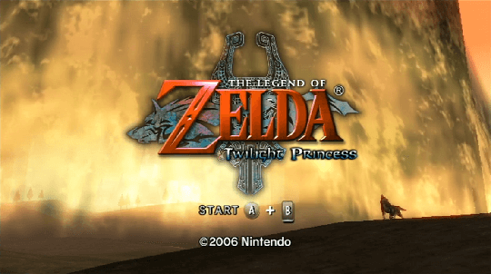

Faron Woods - The Legend of Zelda: Twilight Princess Part 3
Life in Ordon Village is peaceful for Link: days spent herding goats at the Ranch with Fado, running errands for Rusl, and tending to Epona with the help of the mayor's daughter, Ilia... [Read More]